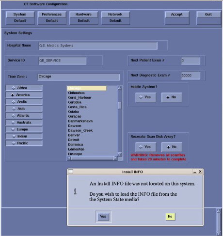

Select
[Yes]
.
Illustration 11:
Install INFO Window

NOTE:
If a valid and current System State Backup media is not available, answer
[No]
and manually configure the Hardware Tab to define System, DAS, Console and Table type.